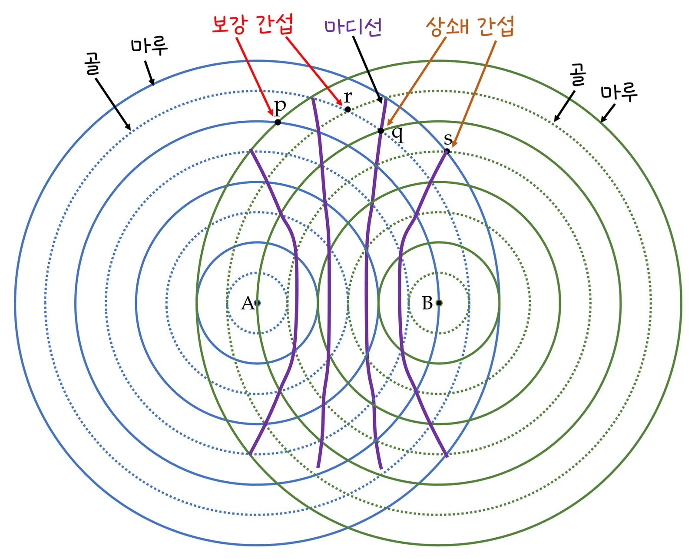
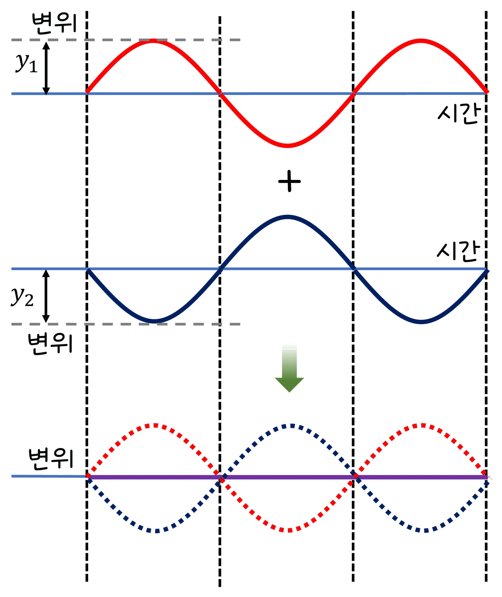

고3 역학과 에너지 · Ⅲ 탄성파와 소리 · 웹툰 15화 「소리로 소리를 지우다」
실험에서 진동수 340·440·680 Hz의 두 스피커를 0.5~1.5 m 간격으로 두고 3 m 앞 선 위에서 마이크를 0~1.5 m 옆으로 옮기며 세기를 재고, 진동수가 2·5·10 Hz 다른 두 소리를 겹쳐 맥놀이를 관찰했습니다. 경로차가 파장의 정수배인 곳은 크게, 반파장의 홀수배인 곳은 거의 0이었고 맥놀이 진동수는 두 진동수의 차였습니다. 중첩과 간섭, 소음 제어를 정리합니다.
실험 데이터 되짚기
음속 343 m/s(20 ℃). 680 Hz(λ = 0.504 m), 스피커 간격 d = 1.0 m, 마이크까지 L = 3 m. 한 스피커만 켠 세기 = 1.
| 마이크 위치 x | 경로차 Δ | Δ ÷ λ | 세기 (상대) | 판정 |
|---|---|---|---|---|
| 0 (가운데) | 0 | 0 | 4.0 | 보강 (진폭 2배) |
| 0.3 m | 0.098 m | 0.19 | 2.7 | 보강에 가까움 |
| 0.6 m | 0.194 m | 0.39 | 0.5 | 상쇄 쪽 |
| 0.8 m | 0.252 m | 0.50 | ≈ 0 | 상쇄 (λ/2) |
| 1.2 m | 0.368 m | 0.73 | 1.7 | — |
| 1.5 m | 0.443 m | 0.88 | 3.5 | 보강에 가까움 (λ) |
보강 위치 간격 ≈ λL/d = 0.504 × 3 ÷ 1 = 1.5 m(작은 각 근사). 진동수가 높을수록(λ 짧을수록) 무늬가 촘촘합니다. 맥놀이: 440 + 444 Hz → 초당 4번 울렁임, 들리는 음높이는 평균 442 Hz.
두 스피커에서 같은 진동수의 소리가 나오면 공간의 각 점에서 두 파가 겹칩니다(중첩 원리). 두 스피커까지의 경로차가 파장의 정수배(0, λ, 2λ…)인 곳은 마루와 마루가 만나 보강 간섭(세기 4배 = 진폭 2배의 제곱), 반파장의 홀수배(λ/2, 3λ/2…)인 곳은 상쇄 간섭(세기 ≈ 0)이 일어나 마이크를 옆으로 옮기면 소리가 커졌다 작아졌다 합니다. 예측 게임 — 왼쪽 스피커까지 5.0 m, 오른쪽 5.5 m, 파장 1 m: 뭉치 ‘스피커 두 개니 두 배로 크게’, 제로 ‘경로차 0.5 m = λ/2, 상쇄’: 소음 측정기 수치가 뚝 떨어집니다. 실제 강당에서는 벽 반사가 섞여 완전히 0은 아니지만 무늬는 뚜렷합니다. 맥놀이: 진동수가 조금 다른 두 소리를 한 곳에서 겹치면 시간에 따라 보강·상쇄가 번갈아 일어나 소리가 울렁이고 f_맥놀이 = |f₁ − f₂|.
교재 그림
두 파원에서 나온 파동의 간섭


실선은 마루, 점선은 골입니다. 마루끼리(p)·골끼리(r) 만나면 보강, 마루와 골(q, s)이 만나면 상쇄 — 상쇄점을 이은 보라 선(마디선) 위에서는 소리가 거의 들리지 않습니다. 아래 그림처럼 위상이 반대인 두 파동을 더하면 변위가 0이 됩니다.
움직여 보기
두 스피커 — 마이크를 옆으로 옮기면 소리가 커졌다 작아졌다
빨강·파랑 선은 두 스피커에서 마이크까지의 경로입니다. 경로차가 0, λ, 2λ…이면 보강(세기 4), λ/2, 3λ/2…이면 상쇄(≈ 0) — x = 0.8 m에서 소리가 사라지는 것을 확인하세요. 진동수를 높이면(λ 짧게) 오른쪽 무늬가 촘촘해집니다. (스피커 간격 1.0 m, 음속 343 m/s, 한 스피커 세기 = 1, 같은 위상, 반사·거리 감쇠 무시)
움직여 보기
맥놀이 — 진동수가 조금 다른 두 소리를 겹치면
위 칸은 그 순간 25 ms 동안의 파형입니다 — 빨강(440 Hz)과 파랑(f₂)이 같은 위상이면 보라(합)가 커지고, 반대 위상이면 거의 사라집니다. 이 일이 1초에 |f₁ − f₂|번 되풀이되어 소리가 울렁입니다. f₂ = 440이면 울렁임이 없어져 조율이 끝난 것입니다. (두 소리 진폭 같음)
노이즈 캔슬링 이어폰은 바깥 마이크가 소음을 받아들이고 칩이 위상이 반대인 소리를 만들어 스피커로 내보내 상쇄 간섭시킵니다 — 비행기 엔진·지하철 소음처럼 규칙적인 저음에 특히 효과적. 자동차 소음기(머플러)는 배기 통로를 여러 갈래로 나누어 되돌아오는 소리와 겹치게 하고, 실내 능동 소음 제어는 스피커로 엔진 소음과 반대 위상을 내며, 콘서트홀은 반사된 소리가 겹쳐 특정 자리(데드 스폿)에서 사라지거나 울리지 않도록 벽과 천장을 설계합니다. 간섭은 소리를 줄이는 데도 키우는 데도 쓰입니다 — 스피커 두 개의 배치 조정, 공사장 소음 저감 장치, 보청기의 주변 소음 줄이기. 기타·피아노 조율은 기준음과의 맥놀이가 사라질 때까지 맞춥니다.
두 스피커를 같은 세기·같은 위상의 점 음원으로, 벽 반사가 없다고 보았습니다. 실제 방에서는 벽·바닥 반사와 스피커의 방향성 때문에 완전한 상쇄(세기 0)는 잘 안 나타나고, 거리가 멀수록 소리가 약해지는 효과(1/r²)를 무시했으므로 마이크가 한 스피커에 가까우면 두 진폭이 달라 상쇄가 불완전합니다. 빛의 이중 슬릿(고2 물리학)과 같은 원리이며 음파는 파장이 커서 무늬가 m 단위로 나타납니다.
λ = 343 ÷ f · 680 Hz → 0.504 m · 보강 간격 ≈ λL/d · 440 + 444 Hz → 4 Hz 맥놀이, 평균 442 Hz
“15라운드! 이 자리에서 소리는 크게 들릴까, 작게 들릴까? 난 크게. 스피커 두 개니까 두 배!” “경로차가 0.5 m, 파장 1 m의 절반이야. 마루와 골이 만나서 상쇄… 조용할 거야!”
웹툰 15화 · 소음 측정기 수치가 뚝 떨어진다 — 제로 8 : 7 뭉치
“소음과 위상이 반대인 소리를 만들어 겹치면 상쇄 간섭으로 소음이 줄어. 비행기 엔진이나 지하철 소음처럼 규칙적인 저음에 특히 효과적이야.” “소리로 소리를 지운다!”
웹툰 15화 · 제로: “간섭은 소리를 줄이는 데도, 키우는 데도 쓰이네요.”
경로차 2.5 m = 2.5λ = (2 + ½)λ → 상쇄, 거의 안 들림. 진동수를 686 Hz(λ 0.5 m)로 바꾸면 2.5 m = 5λ → 보강으로 크게 들립니다 — 같은 자리라도 진동수에 따라 다릅니다.
437 Hz 또는 443 Hz. 줄을 조금 조여 맥놀이가 느려지면 437(낮았음), 빨라지면 443(높았음). 맥놀이가 사라질 때까지 조정하면 440 Hz — 조율의 원리입니다.